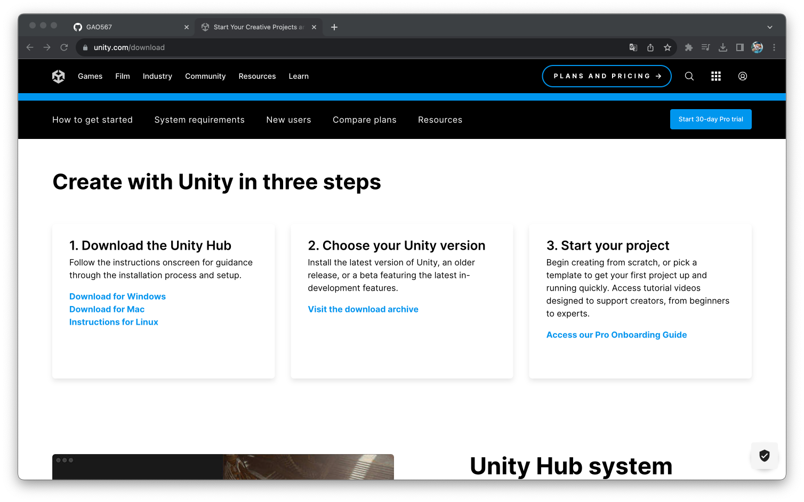
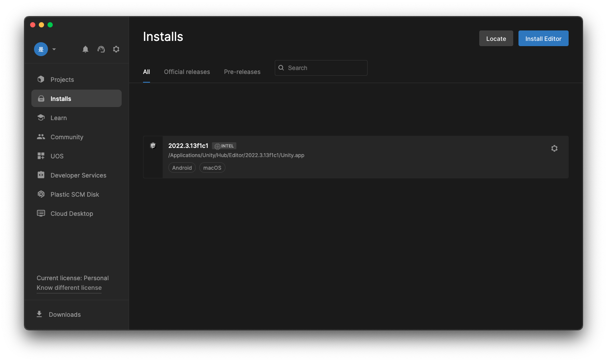
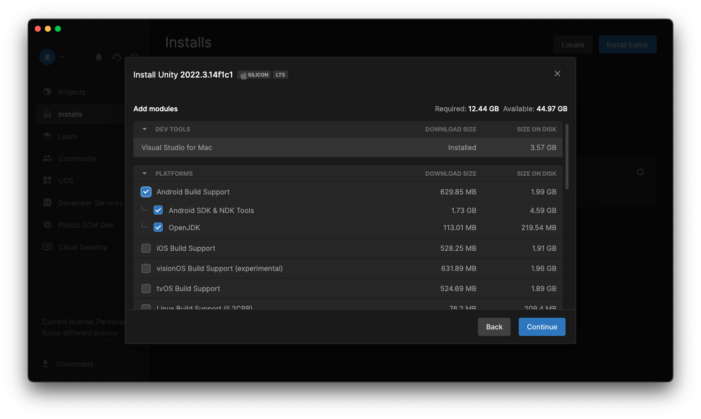
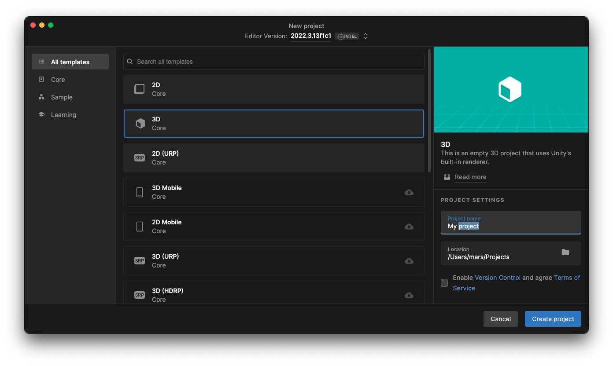
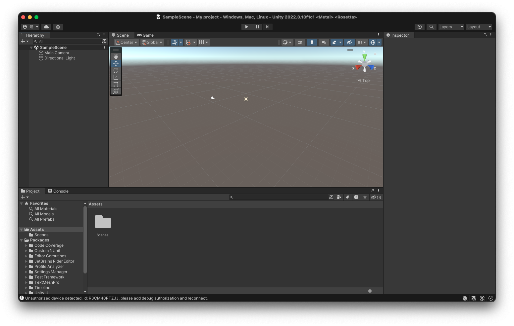

Download Unity Hub
First, go to Unity website to download a Unity Hub. Install Unity Hub and open it. 
Install Unity
Login to the Unity Hub. Press the Installs tab on the left menu and press Install Editor.  Then select a suitable Unity version, select Android Build Support for Oculus Quest developing. 
Create new project
Press the Projects tab to see the projects list. Click the New project button to create a new project.
In this lab, we use the 3D template, name it and choose a proper project location.  Then press Create project button to create this project and you have a new unity project to play around! 